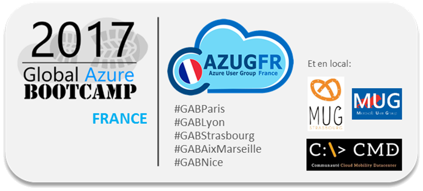

GLOBAL AZURE BOOTCAMP 2017
Elaboré sur le succès exceptionnel des années précédentes, le Global Azure
Bootcamp 2017 est un événement de formation gratuite au Cloud Microsoft Azure organisé par des bénévoles : MVP, experts, passionnés et membres de communautés, et qui se produira simultanément
dans le monde entier le même jour : le 22 Avril 2017.
Quelques chiffres à propos de l’édition
2016 : plus de 7 800 participants dans le monde, provenant de 187 villes de
65 pays. En France, la communauté AZUG FR et ses experts Azure ont organisé l’événement
sur deux sites : Paris et Lyon, rassemblant plus de 200 personnes.
Cette année, en France, AZUG FR étend l’organisation
du GAB avec une présence dans plusieurs villes : Paris, Bordeaux, Lyon, Strasbourg,
Aix-Marseille et Nice, dont certaines en co-organisation avec d’autres
communautés telles que MUG Lyon, MUG Strasbourg et CMD.
PARTICIPANTS
En nous rejoignant à cette journée exceptionnelle,
vous pourrez :
- Vous former sur Microsoft Azure, découvrir,
apprendre ou vous perfectionner
- Rencontrer les experts, mieux
comprendre, trouver de nouvelles solutions, profiter de leurs expériences,
connaissances et savoir-faire
- Réseauter avec les autres participants,
échanger, partager et mieux développer votre business ou vos solutions
techniques
- Rencontrer nos sponsors, découvrir
leurs produits et services
- Participer à un événement local bien
sûr, mais bénéficier aussi d’interactions originales avec les autres villes via
des challenges nationaux et mondiaux.
AZUG FR organise typiquement la journée avec :
- Une plénière (avec un speaker invité Microsoft
France)
- Des sessions de présentation (50 mins
env.) sur les services Microsoft Azure
- Et en parallèle, des ateliers pratiques basés sur un contenu fourni par Microsoft et/ou les organisateurs de l’événement au niveau local ou mondial
… mais aussi :
- Des pauses café et déjeuner
- Des animations et des prix à gagner, offerts par nos sponsors locaux et mondiaux.
Pour vous inscrire, suivez les liens d’inscription ci-dessous:
- cliquer ici pour vous inscrire sur PARIS
- cliquer ici pour vous inscrire sur BORDEAUX
- cliquer ici pour vous inscrire sur LYON
- cliquer ici pour vous inscrire sur STRASBOURG
- cliquer ici pour vous inscrire sur AIX-MARSEILLE
- cliquer ici pour vous inscrire sur NICE
SPEAKERS
Si vous avez envie de parler de votre expérience de Microsoft Azure, présenter un service ou une fonctionnalité particulière, n’hésitez pas à proposer une idée de session, elle sera étudiée attentivement
par les équipes organisatrices.
Pour soumettre votre proposition, c’est
ici : https://tinyurl.com/heybb6r
SPONSORS
L’événement est soutenu par différents
sponsors au niveau mondial, dont Microsoft et fréquemment d’autres éditeurs de
logiciels (pour plus d’informations : https://global.azurebootcamp.net/sponsors/).
En France, vous pouvez aussi devenir sponsor,
au niveau national et/ou local.
Cet événement est pour vous une opportunité
unique dans l’année pour démontrer votre implication communautaire autour
du Cloud Microsoft Azure. Grâce au rayonnement mondial ainsi qu’aux communautés
organisatrices en France, la visibilité sera significative.
En tant que sponsor, nous pouvons vous proposer :
- Un espace d'échanges et networking
- Un stand d’exposition
- Un talk
- Votre logo sur les espaces, présentations et en ligne
- …
Beaucoup de possibilités vous sont offertes.
Pour plus d’information, nous vous invitons à prendre de connaissance du KIT
SPONSOR, et à nous contacter.
VOLONTAIRES
Toute aide, bénévole, est accueillie avec grand plaisir.
Nos besoins sont variés :
- Accueil des participants à l’entrée
- Support logistique
- Stand Experts
- …
Contactez-nous et
rejoignez-nous !
MERCI, et A TRES BIENTOT !
L’équipe AZUG FR, azugfr@outlook.com